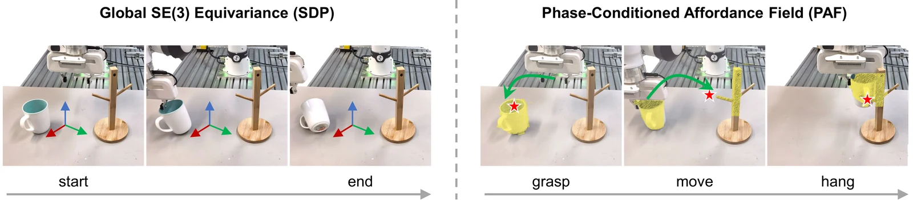
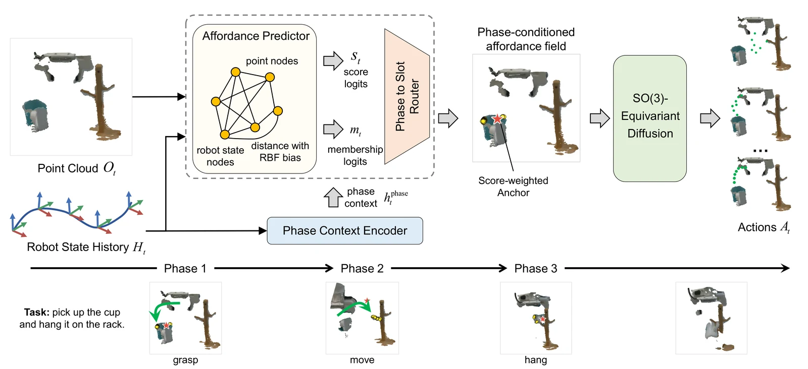
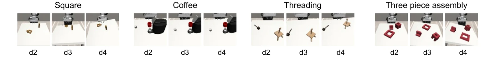
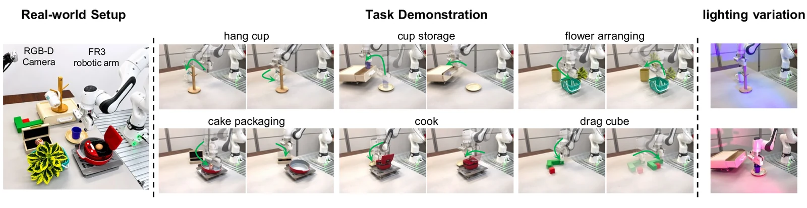

Phase Context Encoding
- Phase Context Encoder maps six SE(3)-invariant statistics from the robot state history to a phase context

EnlargeSE(3)-equivariance provides a useful geometric inductive bias for visuomotor policies, encoding that actions covary with rigid transformations of the observation. However, existing SE(3)-equivariant visuomotor policies build this bias on a global equivariance assumption that treats the entire observation as governed by a single rigid transformation, which breaks down in real-world manipulation tasks where the task-relevant region changes across different objects. We address this by learning a phase-conditioned affordance field (PAF) over the observed point cloud, a per-point score that the SE(3)-equivariant policy uses in two complementary ways. Its score-weighted centroid serves as a learned, phase-conditioned anchor that canonicalizes the observation and the action around the active region, replacing the fixed gripper-frame reference, and the score itself is appended as a per-point feature. This introduces a local geometric inductive bias, while preserving the policy’s global SE(3) equivariance. We validate on multiple MimicGen tasks under varying spatial randomization, and PAF consistently improves the success rate of the underlying policy. On multi-object real-robot tasks, PAF outperforms baselines and remains more robust under lighting variations.

Enlarge
Enlarge
EnlargeRobot execution under the training lighting condition.
Robot execution under out-of-distribution colored illumination.
@misc{pafpolicy,
title={Phase-Conditioned Affordance Fields for SE(3)-Equivariant Visuomotor Policies},
author={Xinzhe Chen and Liqi Huang and Sihua Ren and Haowen Sun and Mingyang Li and Zeyang Liu and Xingyu Chen and Xuguang Lan},
year={2026},
eprint={2610.17281},
archivePrefix={arXiv},
primaryClass={cs.RO},
url={https://arxiv.org/abs/2610.17281},
}